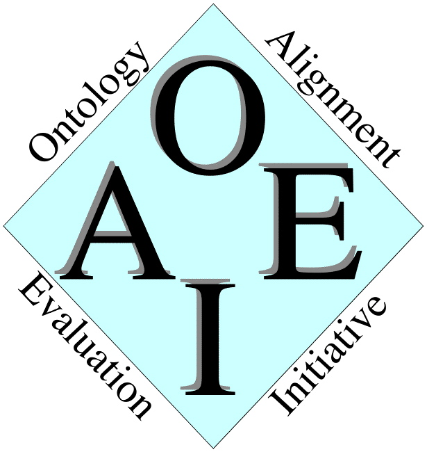

Ontology Alignment Evaluation Initiative
Documentation about evaluation
Proceedings
Contacts
Contact address is Jerome . Euzenat (À) inrialpes . fr
http://oaei.ontologymatching.org/doc
$Id: index.html,v 1.11 2010/04/15 14:40:42 euzenat Exp euzenat $